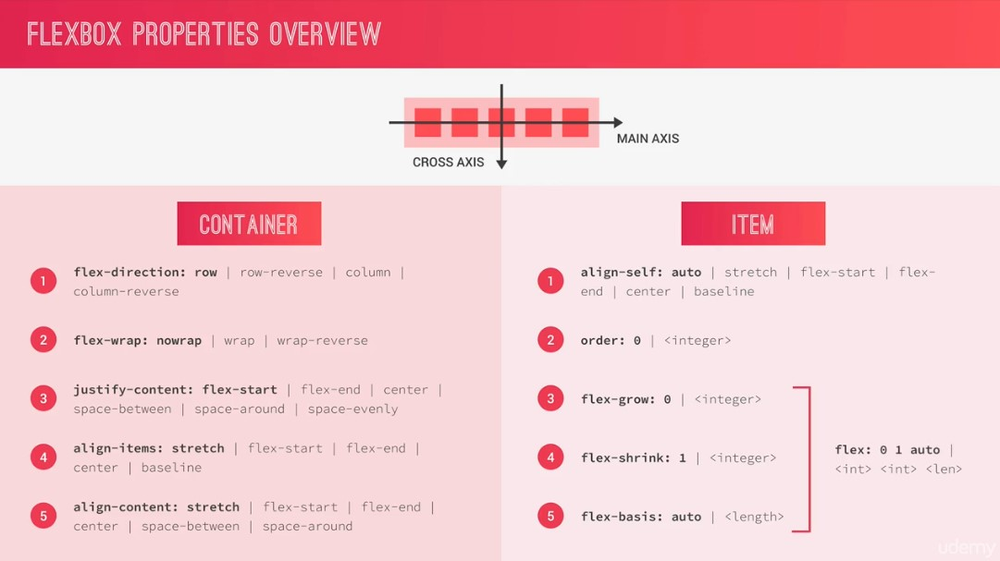

- 1
- 2
- 3
- 4
- 5
- 6
Awesome Trick
Flex: 1
//it says it will grow as much as it can. AWESOME! flex: 1; Apply this on flex-item.Select all direct children
.user-nav { background-color: yellow; display: flex; align-items: center; // the user-nav and all the direct children & > * { } the children are - __icon-box - __userEasiest way to center things
display: flex; align-items: center;Changing color of SVG
fill: var(--color-grey-dark-2); use [fill] // the current color of what is using. whaat? // its just like an inherit color, for SGV fill: currentColor;Center Text
//put this on the main container display: flex; align-items: center; justify-content: center;Putting top or bottom the elements
display: flex; flex-direction: column; justify-content: space-between;Where transform starts
transform-origin: right-end;Modern animation
transition: transform 0.2s, width 0.4s cubic-bezier(1, 0, 0, 1) 0.2s, background-color .1s;
f7v68

f7v69 A Basic Intro to Flexbox The Flex Container
To container
[display]:flex; - So we can now use flex css style. [flex-direction]: row; - :row is default. - :row-verse, :column-reverse is another value - :column, will eat 100% of width. :column-reverse, just reverse. [justify-content]: center; - to control how the items shud be positioned - :space-between - the spaces between. - :space-around - will have the same amount, - but the space of gutter is 50% less. - :space-evenly - space between and gutter are the same. - :flex-end - all items is in right-end with no spaces. - :flex-start - all items is in left-end with no spaces. [align-items]: gagana sya kung ung isang item is iba ung size (height) - its default value is stretch - meaning, khit isa lang ung my ibang size, lahat ng items e magiging ganun din. - :center - the alignment will be center; along cross axis - :flex-start - the alignment starts at the top. - tapos ung merong ibang size lang ung stretched. - :flex-end - oposite ng flex-start. - :baseline - works with texts. kung merong isang item na iba ung font-size, aalign sya from bottom. gulo ba?
The most used on flex-box container
flex-direction: row justify-content: center align-items: center when we change the flex-direction: row to :column - now it will not gonna eat the whole width. - it's becoz of align-items: center; - we can now play align-items: flex-start or end. - now for example we align-items: flex-end. - all item now will be centered vertically - with same gutter top and bottom
f7v070 A Basic Intro to Flexbox Flex Items
[Align-self] - it override the [align-items] - so if the container has [align-items: center] we can override it - for ex. using :flex-end. [order] - all the orders of flex-items is 0 - now if we put -1 as value on item #4 the number 4 will go in the first line - so the lower the order number, it will the 1st in the order. [flex-grow] - 1; it will grow its width. it will occupy the space they can. - but if the other items has different [flex-grow] value for ex. 2. - it will grow bigger that the previous size. - it will multiply the size of 1 [flex] - same as [flex-grow: 1] and [flex-basis: 300px] and [flex-shrink:1] - if we set [flex: 1] in just 1 item. it will occupy all the spaces - and all remain items will just occupy their spaces but no expand [flex: 0 0 300px] - 1st [flex-grow] - 2nd [flex-shrink] - 3rd [flex-basis] [flex-basis] - we can set the width of a flex-item - instead we use width on flex-items we use this. - 20% - of the container. it can be px, em, rem. - if 1 item has this property. it will get 20% size than other elements. [flex-shrink] - 1; default. by value of 1, it can allow to shrink if this applies on one or all items - 0; if zero value is set, it will now no longer can be shrink. when resizing the screen. [small screen] - if we resize the window, the sizes will maybe back to normal. - becoz there is no extra space.
f7v071 A Basic Intro to Flexbox Adding More Flex Items
[flex-wrap] - default value :no-wrap - its a propert for flex-container - if other flex-items has different [order] number value then this one or many item will move down. - then once we start resizing our screen to smaller other items will also go down. [align-content] - is a partner of [flex-wrap] (in my perspective) - it will align rows along the cross axis - pretty similar to [align-items] - :space-between - the items will be in top and bottom. so there is space in between.
f7v073 Defining Project Settings and Custom Properties
Global resets
* {
margin: 0;
padding: 0;
}
*::before,
*::after,
* {
box-sizing: inherit;
}
html {
box-sizing: border-box;
font-size: 62.5%; // 1rem = 10px, 10px/16px = 62.5%
}
Defining variable in css
-- is necesarry for declaration
:root {
--color-primary: #eb2f64;
}
Calling defined variable
color: var(--color-primary);
f7v074 Building the Overall Layout
//it says it will grow as much as it can. AWESOME! trick! flex: 1;
f7v075 and v76 Building the Header - Part 1 and 2
Why use SVG?
SVG - Scallable Vector Graphics - icon-font has a lot of problem. some browsers only show square. - and we cant also change the color. - so SVG to here to the rescue - icomoon.io - 1 of the website we can use for SVG icons - choose only the icons we need. remove .png. - copy only the SVG folder and symbol-defs.svg - then change the symbol-defs.sgv to sprite.svg - only for web browser
How to call SVG
Calling siblings CSS selector
We can do also do flex-content together with flex-item.
f7v077 Building the Header - Part 3
.user-nav {
background-color: yellow;
display: flex;
align-items: center;
// the user-nav and all the direct children
& > * {
}
f7v078 & 79 Building the Navigation - Part 1 and 2
80 na!!